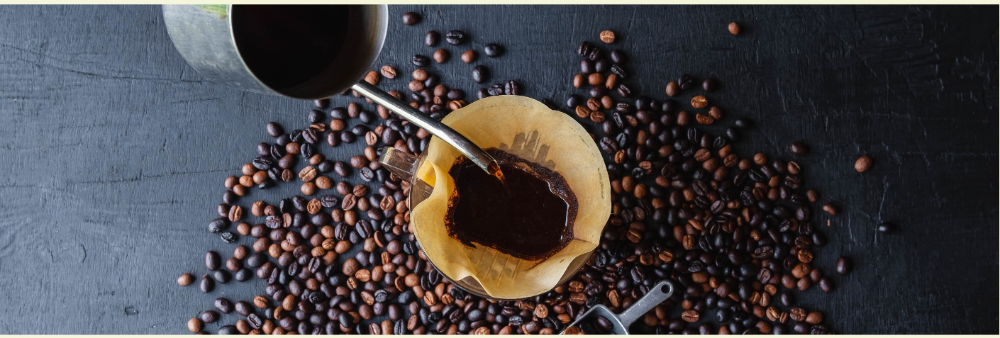
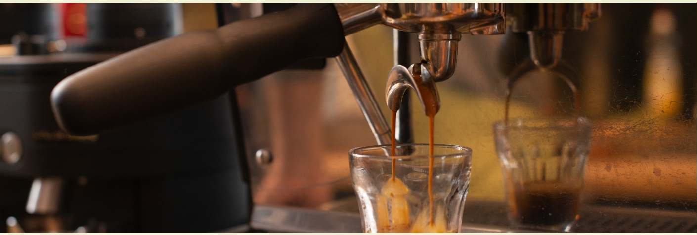
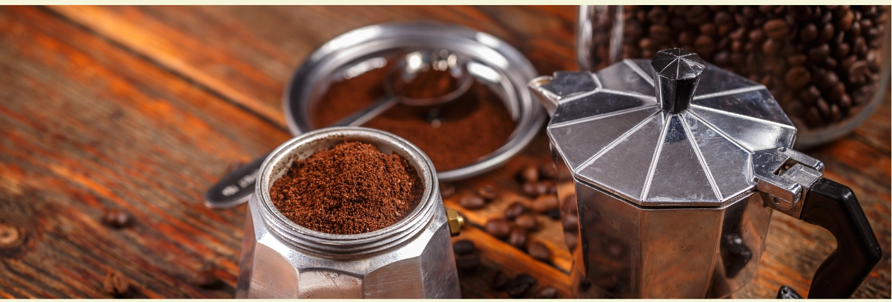
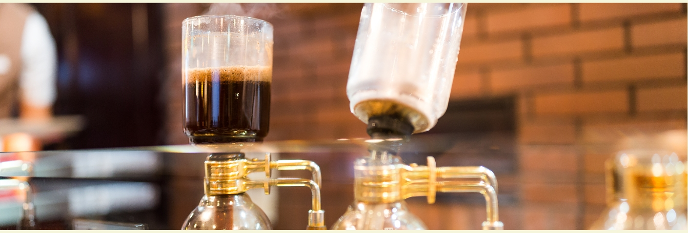

Brewing GuideUnlocking the Art of Coffee Brewing at Home
At Express Beans, we believe that everyone deserves a great cup of coffee,
whether you're enjoying it in our cafe or brewing it yourself at home.
This guide will help you master the art of coffee brewing, from simple
methods like French Press to more advanced techniques like pour over and
espresso. We'll explore the nuances of each method, sharing tips
and tricks to help you extract the best flavor from your beans.
Flavor is the language of coffee.
We'll cover the essential elements of brewing, including coffee-to-water ratios,
grind size, water temperature, and brewing time. We'll also provide recommendations
for equipment and resources to help you elevate your home brewing setup.
Whether you're a seasoned coffee connoisseur or just starting your brewing journey,
our goal is to empower you with the knowledge and tools to create the perfect cup,
every time.
Choose a brewing method below to get started!
Brewing Guide
French Press
Pour Over
Aeropress
Cold Brew
Espresso
Moka Pot
Vacuum Coffee Maker
French Press

...Pour Over...Aeropress...Cold BrewThe Art of Cold Brew
Cold brew is a method that produces a smooth, low-acid coffee concentrate by steeping
coarsely ground
coffee in cold
or room temperature water for an extended period. This slow, gentle extraction process
minimizes
bitterness and
highlights the natural sweetness of the beans, resulting in a rich, chocolatey, and
incredibly
refreshing coffee
experience.
Unlike traditional hot brewing methods, cold brew requires patience, but the reward is a
versatile
concentrate that
can be stored in the refrigerator for up to two weeks. Enjoy it straight over ice, diluted
with
water or milk, or use it
as a base for delicious coffee cocktails.
Cold brew's lower acidity makes it a gentler option for those with sensitive stomachs. It
also offers
a unique flavor
profile that differs from hot-brewed coffee, often revealing sweeter, more nuanced notes.
Experimenting with different Express Beans blends and grind sizes allows you to customize
your cold
brew experience
and discover your perfect balance of flavor and strength. We recommend starting with our
signature
Espresso Nova blend
for a truly exceptional cold brew.
Important settings:
Coffee-to-Water Ratio: 1:8 (adjust for desired concentrate strength)
Water Temperature: Room temperature or cold filtered water
Brew Time: 12-24 hours (longer steeping times result in a stronger concentrate)
Grind Size: Coarse (similar to French Press)
Step-by-step instructions:
Grind the coffee: Grind your Express Beans coffee to a coarse consistency.
Combine coffee and water: In a large container (e.g., a French Press, mason jar, or
dedicated
cold brew pitcher),
combine the ground coffee with cold or room temperature filtered water.
Stir gently: Stir the mixture gently to ensure all the grounds are saturated.
Steep: Cover the container and let the coffee steep at room temperature or in the
refrigerator
for 12-24 hours. Longer
steeping times will result in a stronger, more concentrated brew.
Filter: Once steeping is complete, filter the coffee using a fine-mesh sieve,
cheesecloth, or a
paper filter. A French
press can also be used directly for both steeping and filtering.
Store and serve: Store the cold brew concentrate in an airtight container in the
refrigerator
for up to two weeks.
Dilute the concentrate with water or milk to your desired strength and serve over ice.
Espresso

...Moka Pot

...Vacuum Coffee Maker

...